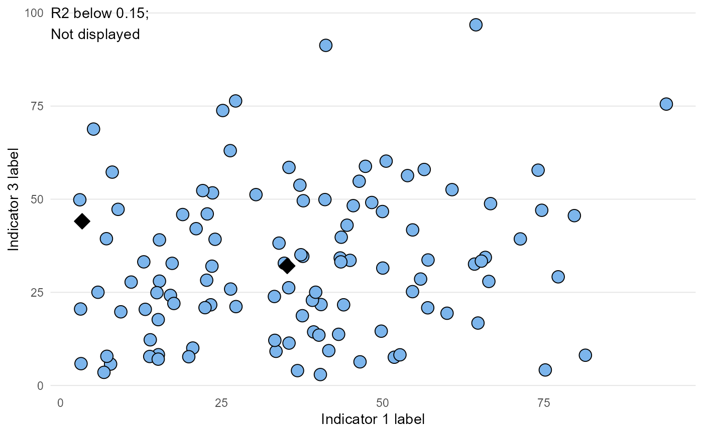

Plot compare indicators plot
compare_indicators( data, x, y, xlab = "", ylab = "", point_size = 4, highlight_area, area, add_R2 = FALSE )
| data | data.frame object to plot using ggplot2 functions |
|---|---|
| x | field containing x variable (unquoted) |
| y | field containing y variable (unquoted) |
| xlab | string; x-axis title |
| ylab | string; y-axis title |
| point_size | number; size of point |
| highlight_area | character vector; list of areas for highlighting |
| area | field containing areas - should contain contents of highlight_area. Only required if highlight_area has a value (unquoted) |
| add_R2 | boolean; should R2 be displayed? |
a ggplot of compare indicators for 2 indicators
Other quick charts:
box_plots(),
compare_areas(),
map(),
overview(),
population(),
trends()
library(tidyr) library(dplyr) df <- create_test_data() df_ci <- df %>% filter(IndicatorName %in% c("Indicator 1", "Indicator 3")) %>% select(IndicatorName, AreaCode, Value) %>% pivot_wider(names_from = IndicatorName, values_from = Value) %>% rename(Ind1 = `Indicator 1`, Ind3 = `Indicator 3`) %>% mutate(Ind2 = runif(nrow(.), min = Ind1 * 0.5, max = Ind1 * 1.5)) p <- compare_indicators(df_ci, x = Ind1, y = Ind3, xlab = "Indicator 1 label", ylab = "Indicator 3 label", highlight_area = c("C001", "AC172"), area = AreaCode, add_R2 = TRUE) p